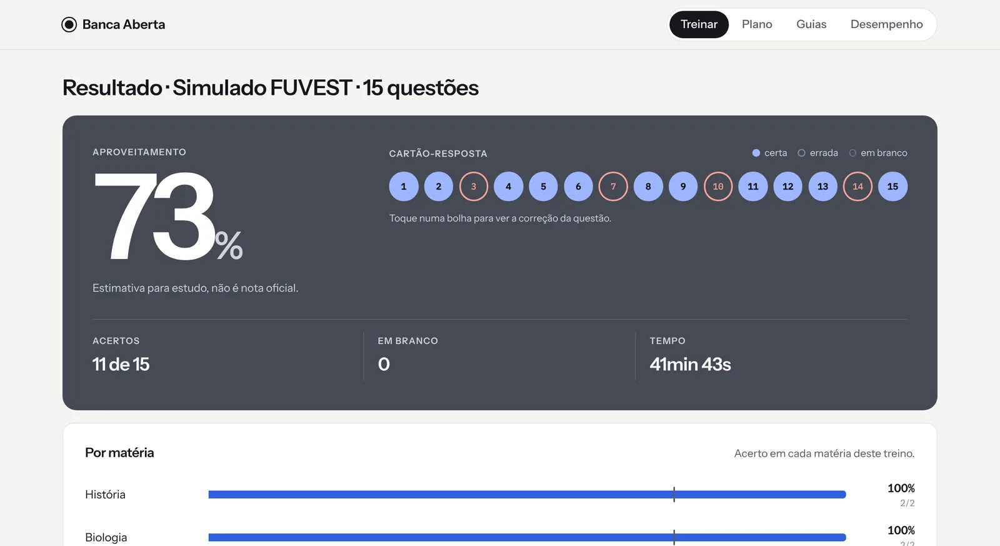

01 — Treine
A prova de verdade, no tempo de verdade.
Simulados sorteados no formato do edital de 2027, provas completas e treino por matéria, sempre com o cronômetro correndo no tempo de prova do edital. A resposta só aparece quando você entrega, como no dia.
- Questões da FUVEST, Unicamp e UNESP de 2017 a 2026, com a fonte de cada uma
- Gabarito sempre o oficial da banca, na versão do caderno
- Cartão-resposta com acertos e erros num relance
